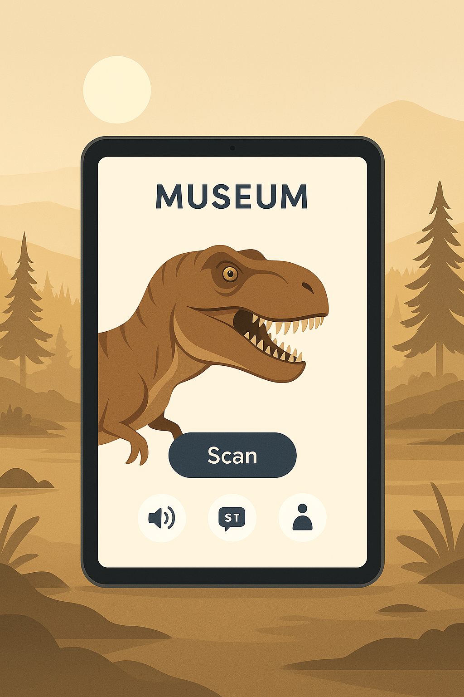
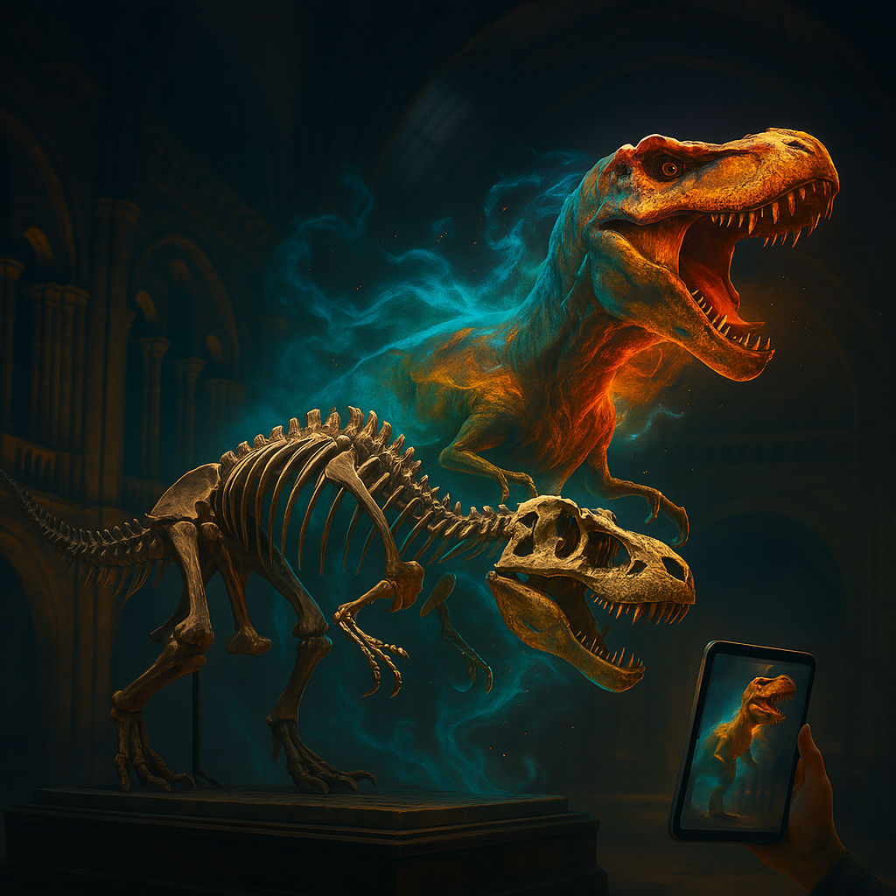
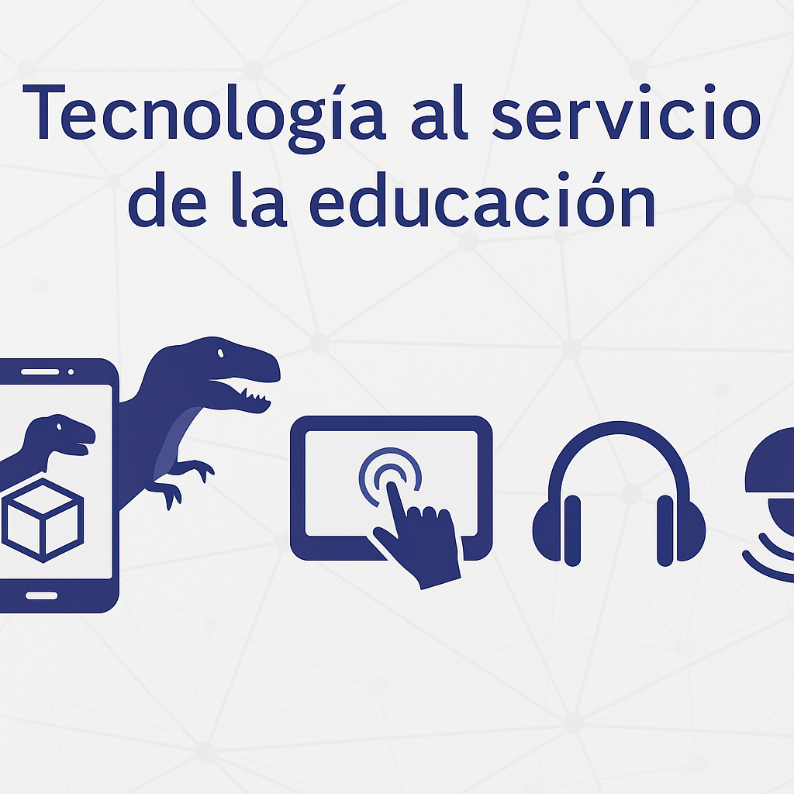
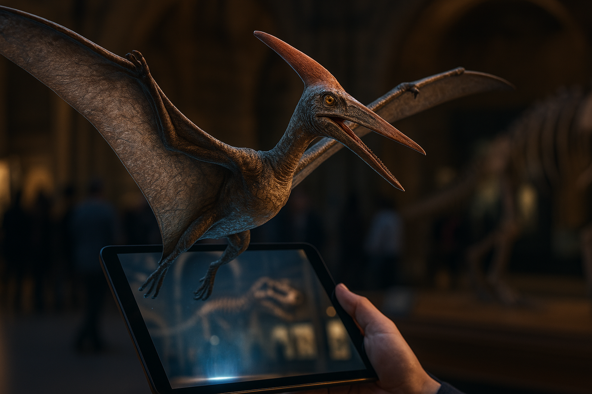
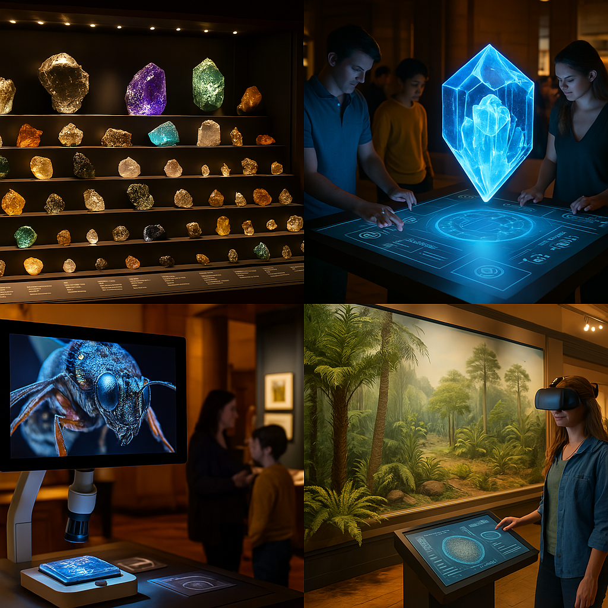
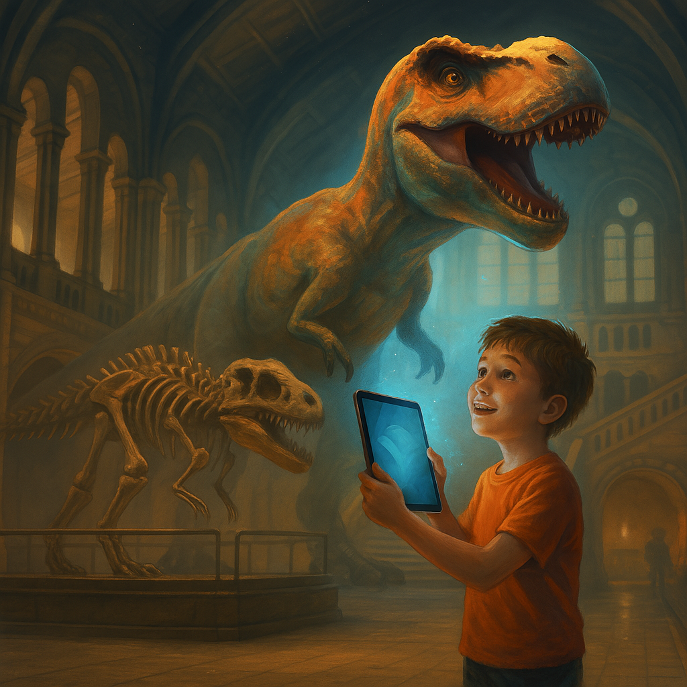

Introducción al Proyecto
Explora la dino realidad con tecnología RA y modelos interactivos.
Transformando la experiencia en la Sala de Dinosaurios

- El Museo de Historia Natural de Londres es un referente mundial en ciencia y cultura.
- Su Sala de Dinosaurios es una de las más visitadas, pero la interacción sigue siendo limitada.
- Esta propuesta busca integrar tecnologías multimedia para enriquecer la experiencia del visitante.
Concepto de la Propuesta
El objetivo es ofrecer una experiencia inmersiva mediante el uso de realidad aumentada,
modelos 3D y audio interactivo.
Los visitantes podrán visualizar cómo se movían y vivían los dinosaurios, en una propuesta
educativa, lúdica e inclusiva adaptada a todas las edades.

Recorrido Interactivo por la Sala Azul
El recorrido está diseñado para ser explorado de forma intuitiva:
- Escanear un fósil → aparece dinosaurio en RA
- Escuchar su rugido o comportamiento
- Ver videos sobre su entorno natural
Interfaz simple, accesible e intuitiva
- Interacción a través de tablets en puntos clave o una app en el smartphone del visitante.
- Diseño adaptado para todas las edades con botones grandes e iconografía clara.
- Accesibilidad: opciones de audio, subtítulos y ajustes de contraste.
- Idiomas disponibles: inglés, español, francés y más.

Cuando el fósil cobra vida

- Escaneo del esqueleto del T. rex desde una tablet o app del museo.
- Animación RA del dinosaurio caminando, rugiendo o cazando.
- Modelo 3D rotable y con zoom para explorar detalles anatómicos.
- Sonido envolvente del entorno natural.
Tecnología al servicio de la educación

- Realidad Aumentada (RA) para reconstrucción animada.
- Modelos 3D interactivos para tablets o smartphones.
- Pantallas táctiles informativas con contenido multimedia.
- Audioguías interactivas con QR y narraciones en varios idiomas.
- Sensores de movimiento que activan contenido.
¿Por qué implementar DinoRealidad?

- Interacción activa que transforma la observación en exploración.
- Mayor inclusión y accesibilidad para diferentes tipos de público.
- Aprendizaje significativo y experiencial.
- Atractivo para todas las edades.
- Complementa las piezas originales sin reemplazarlas.
Un modelo replicable en otras zonas del museo

- Zona Roja: visualización 3D de cristales y estructuras internas.
- Zona de Insectos: microscopía aumentada con detalles aumentados.
- Zona Verde: ciclos de vida animados y evolución de especies.
- Visitas virtuales para acceso remoto.
- Colaboración con apps educativas y universidades.
Una nueva era para la historia natural

- DinoRealidad transforma la visita en una experiencia educativa y accesible.
- Integra tecnología sin perder el valor de lo original.
- Genera una conexión emocional y cognitiva con el pasado prehistórico.
- La historia cobra vida cuando se puede explorar, sentir y experimentar.